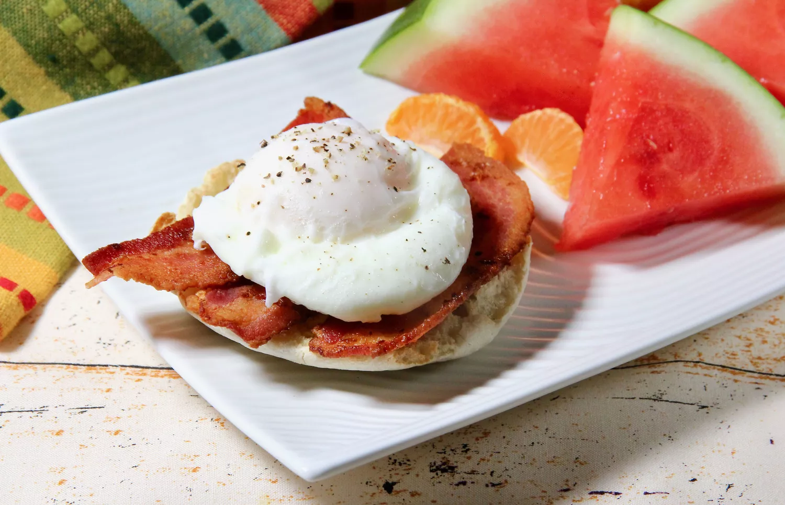

Poached Eggs

How to Make Perfect Poached Eggs
Poached eggs are a versatile restaurant delicacy. Enjoy them on toast or english muffins, toss them in a sald, or add them on top of rice or pasta. But you can just as easily make this restaurant breakfast staple at home!
Ingredients
- 2 eggs
- Salt and freshly ground black pepper
Steps
- Put 1 inch of water in a small saucepan and bring it to a boil.
- Crack each egg into a shallow bowl and gently slip yolk into water.
- Cook 3-5 minutes and lift egg out of pan with a slotted spoon, letting as much water drain off as possible.
- Serve immediately and enjoy.